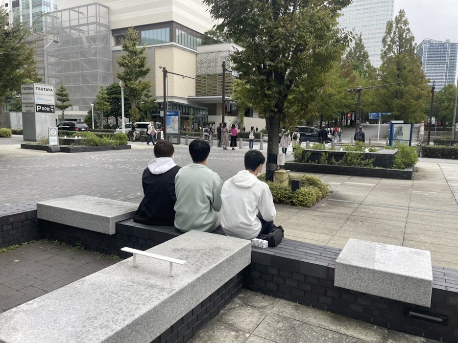
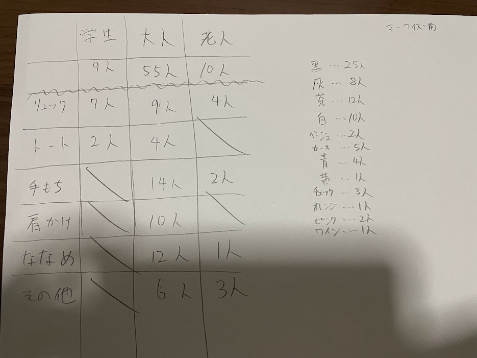
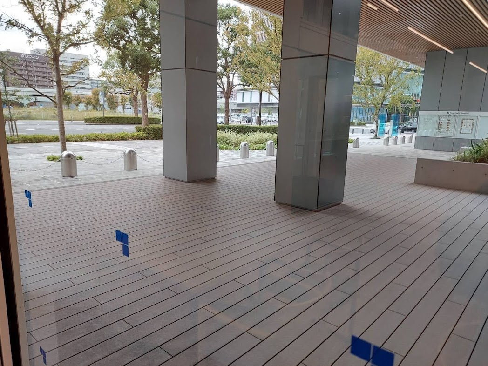
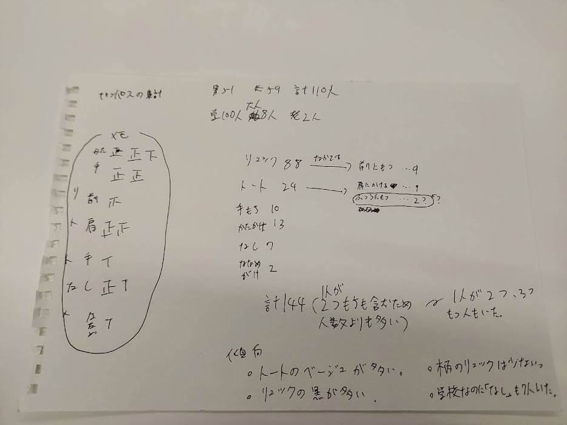

課題４(鞄の色々)
- マークイズ前


- キャンパス前


- 発表用ppt
まとめ
今回の簡単なことだけでもフィールドワークが難しいことが分かった。
ただ、簡単なことでも傾向がみられてとても面白いと思った。リュックでは個性を出さずに服で個性を出していると感じた。自分の場合は鞄にストラップを付けることで個性を出しているが、そういった人もあまりみられなかった。
今回のフィールドワークを活かして、普段から自分の身の回りの人を観察し、自分とは違う部分を見つけることを楽しみたいと思った。自分と違うもの、異文化を感じることはとても楽しい。
デザイン演習１・２トップページ
XBPトップページ